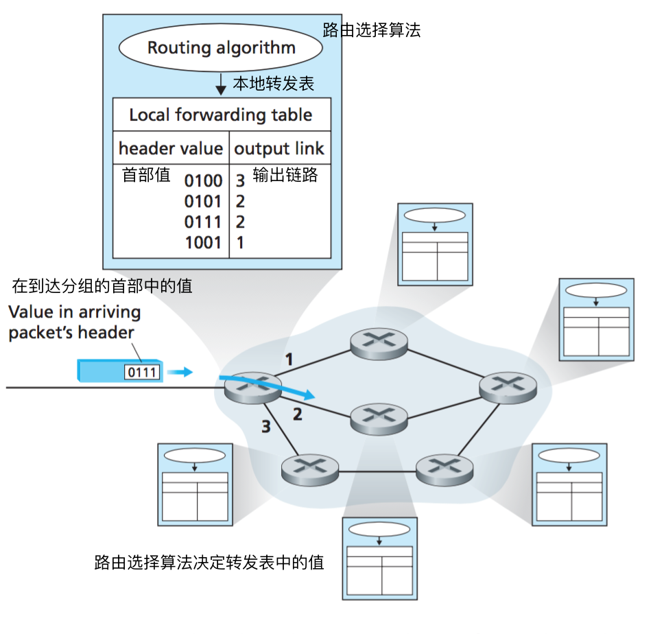
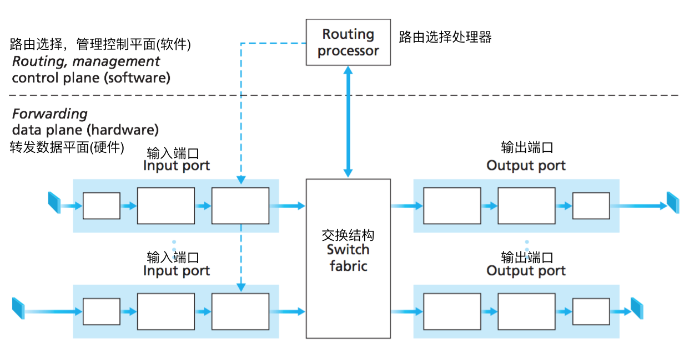
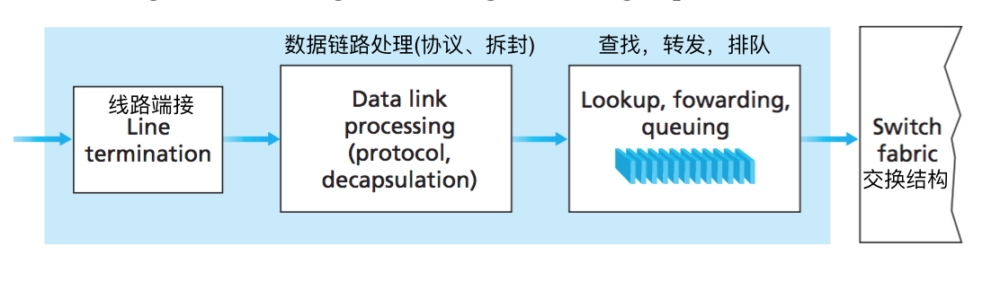
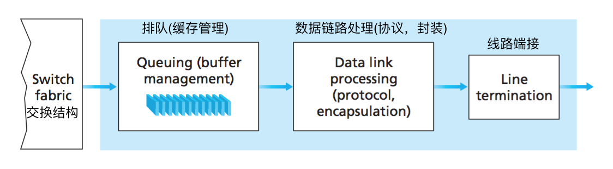
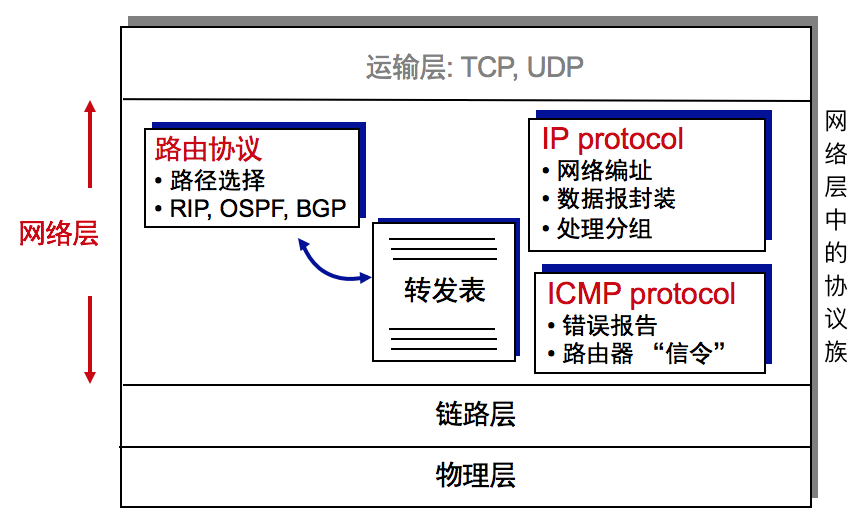
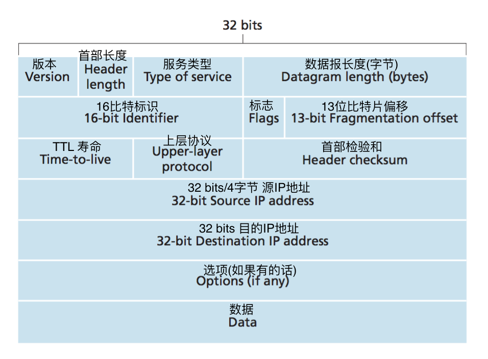
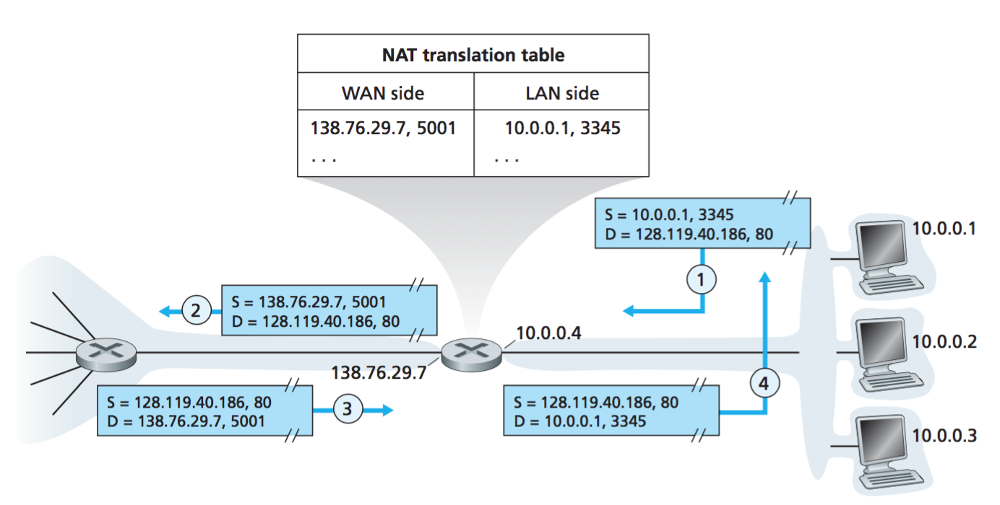
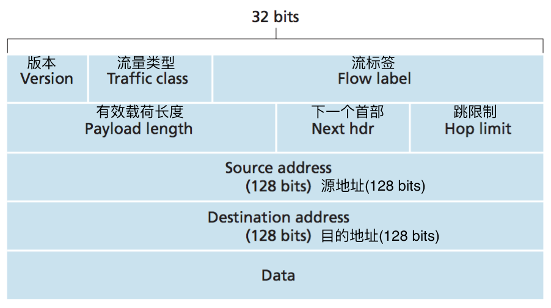

计算机网络笔记04 网络层
4.1 网络层概述
- 网络层服务和协议: 提供主机之间的逻辑通信。
- 在端系统中
- 发送方：将报文段封装成数据报，提交给数据链路层。
- 接收方：将数据报解析成报文段，提交给运输层。
- 在网络核心节点中
- 路由器：转发数据报，交付到目的主机
分组转发和路由选择
- 网络的两个主要功能
- 分组转发：分组到达路由器的输入链路，路由器将分组移动到正确的输出链路
- 路由选择：确定分组的路径 
- (第三个功能 可选)建立连接
- 在某些网络体系中存在连接:ATM (异步传输模式), 帧中继, MPLS
- 在交付数据报之前，要建立虚拟的连接：主机和路由器都参与连接
- 网络层 v.s. 运输层 连接服务:
- 网络层: 两个主机以及中间的路由器创建的虚电路
- 运输层: 两个进程直接建立连接的端到端连接，中间的路由器不参与
网络服务模型
网络层能够提供的数据交付服务包括:
- 当运输层向网络层传递一个分组时:
- 确保交付
- 具有时延上界确保交付
- 为给定的源和目的地之间的分组数据流提供的交付服务:
- 有序分组交付
- 确保最低带宽
- 确保最大时延抖动
- 安全性服务
4.2 虚电路和数据报网络
| 数据报网络 | 虚电路网络 |
|---|---|
| 无连接的服务 | 面向连接的服务 |
| 目标地址决定路径 | 分组携带虚电路ID |
| 分组的路径可能会改变 | 分组的路径不变 |
| 类比: 自驾、问路 | 类比：火车 |
虚电路网络
- 端到端的路径类似于电话线路
- 性能稳定
- 网络行为与端到端的路径紧密相关
- 3个阶段：建立连接、数据传输、虚电路拆除
- 每个数据分组携带虚电路标识
- 不是目标主机的地址
- 可能要给虚电路预留资源：链路带宽、路由器缓存
- 虚电路的组成：端到端的路径，虚电路标识，路由器中的转发表
- 虚电路标识：不是目的地址，一个连接中的虚电路号在不同的链路中可能标识不同
- 虚电路的转发表: 路由器维护连接的状态信息
- 虚电路的信令协议：用于建立、维护、拆除虚电路，在ATM, frame-relay(帧中继), X.25等网络体系中使用；因特网中不再采用信令协议。
数据报网络——无连接的分组交换网络
- 网络层不需要建立连接
- 路由器：不需要维护端到端连接的状态，网络层不再有“连接”的概念
- 分组通过目的主机的地址来转发：一个端到端通信中，相同目的地址的分组可能走不同的路径
- 数据报网络的转发表
- 由于有40亿多IP地址, 转发表的记录是针对IP地址段
- 目的IP地址封装在数据报的首部
- 最长前缀匹配
虚电路网络 vs. 数据报网络
| 虚电路网络 | 数据报网络 |
|---|---|
| 在电话网的基础上演化而来 | 计算机之间通信的网络 |
| 类似人的通信: 时延/可靠性/需要较多服务保障 | 弹性服务, 没有严格的时延需求 |
| 哑终端: 端系统较简单，如电话，网络较复杂 | 智能终端: 可控制处理差错，网络核心简单、边缘复杂 |
| 多种链路类型：特性不同，难以统一服务类型 |
数据报网络
4.3 路由器的工作原理
路由器的体系结构
- 两个主要功能：分组转发、路由选择
- 四个主要构件：输入、输出端口；路由选择处理器、交换结构 
输入端口
- 链路终端：物理层，Bit信号接收
- 链路层协议接收端：数据链路层，e.g.以太网 参见第5章
- 查找转发排队：分布式交换
- 转发：给定目的地址, 在路由转发表查找输出链路 (“match plus action”)
- 目标：匹配链路速度
- 排队：输入速度大于输出速度，产生队列
交换结构
- 作用：将分组从输入端口的缓存
- 交换速度: rate at which packets can be transfer from inputs to outputs
- 三种类型的交换结构：经内存交换、经总线交换、经互联网络交换
输出端口
 >缓存：输入速度大于输出时，将分组缓存/排队4.4 IP:网际协议
 #### IP数据报格式 - 网络层IP数据报： - 可封装为运输层的报文段(帧)：为上层提供服务 TCP/UDP - 可封装**ICMP**控制报文—工作在**网络层**  - 版本(4 bits)：IP协议的版本号(4 或 6)，不同版本的IP数据报首部字段不同，路由器能确定如何解释剩余字段 - 首部长度(4 bits)：4 bytes为1个单位，20字节固定首部长度+扩展首部(选项字段) - 服务类型(8 bits)：低时延、高吞吐量、实时、可靠性等 ，告知路由器，以便按需调度(排队、转发) - 数据报长度(16 bits)：IP数据报的总长度(单位为字节)，理论上最大长度为216-1字节，实际：1500字节。 - 16比特标识 + 标志 + 片偏移（16 bits + 3 bits + 13 bits)：用于IP数据报的分片和组装，后面详解。 - 生存次数(8 bits)：IP数据报最多能通过多少个节点 - 每经过一个路由器，TTL减1 - TTL=0时数据分组将被丢弃，意味着没有为分组找到合适的路径 - 上层协议(8 bits)：IP数据报到达终点后才会使用，告诉接收方顶层使用什么协议。`6：TCP` `17：UDP` - 首部检验和(16 bits)：只对首部字段检验，每个路由器都要检验，因为TTL减1的性质，每跳后首部检验和都会变化。 - 源IP地址、目的IP地址(各32bits)：用于对主机、路由器进行网络标识 - 选项字段 + 填充(长度可变，4 bytes的整数倍)：用于对IP协议的扩展IP数据报的分片和组装
- 网络链路最大传输单元(MTU)
- 链路中能传送数据分组最大尺寸
- 不同链路的最大传输单元不同
- 跨越不同网络时，需要将大数据报分片
- 在边界路由器拆分成片
- 到目的地(端系统)后将分片组装
- IP 首部中有3个字段
标识标志片偏移：是否分片，如何组装
为坚持网络内核保持简单的原则。IPv4的设计者决定将数据报的重新组装工作放到端系统中，而不是放到网络路由器中。
例子：P224 表4-2
IPv4网络编址
- IP 地址: 对主机和路由器网络接口进行标识，32bit
- 接口: 主机(路由器)与链路之间的边界
- 路由器有多个接口(路由器与它的任意一条链路之间的边界)
- 主机一般有1-2个网络接口 (e.g. wired Ethernet, wireless 802.11)
- IP地址是对每个网络接口进行编址
- 网络接口之间如何连接(链路层问题 5/6章)
- 有线以太网的接口通过以太网交换机相互连接
- 无线局域网的接口通过无线基站连接.
点分十进制：223.1.1.1 = 11011111 00000001 00000001 00000001
子网划分:将高位IP相同的端口划分为子集，不通过路由器转发而进行通信
- IP地址分两段：高位：子网标识，低位：主机标识
- 子网划分方法:使用路由器的端口将网络划分成独立的”孤岛”，每个”孤岛”为一个子网
- 子网掩码：/24记法 前24bit是子网标识，置为1。
子网掩码: 255.255.255.0
aka: 11111111 11111111 11111111 00000000
组织机构获得IP地址块(子网)的方法：
- 从ISP的地址空间中来获得一个地址块
- ICANN向区域性因特网注册机构分配地址，这些记过一起形成了ICANN的地址支持组织，处理本地域内的地址分配/管理。
获取主机地址：DHCP 动态主机配置协议
获取主机地址:手动配置 / 动态主机配置
DHCP: 动态主机配置协议
- DHCP协议不仅仅配置IP地址，还有其他重要的联网参数：
- 网关地址(邻接路由器网络接口的IP地址)
- DNS服务器的名字和IP地址
- 子网掩码
- DHCP工作的协议栈：工作在应用层，port：67(目的端口)、68(源端口)，传输层：UDP
- 4个步骤：
- DHCP服务器发现：客户在UDP分组向端口67发送
DHCP发现报文，使用广播地址 255.255.255.255 并且使用源地址 0.0.0.0。链路层将该帧广播到所有与该子网连接的子网。 - DHCP服务器提供：
DHCP提供报文，同样使用广播地址 255.255.255.255。每台服务器提供的报文有收到的发现报文的事务ID，向客户推荐的IP地址，网络掩码以及IP地址租用期。 - DHCP请求：新到达的客户从一个或多个服务器提供中选择一个，并向选中服务器提供一个
DHCP请求报文进行响应，回显配置参数。仍然使用广播地址。 - DHCP ACK：
DHCP ACK报文，对DHCP请求报文进行响应，证实所要求的参数
网络地址转换: NAT
- 动机
- 多个用户可以使用一个IP接入互联网
- 不需要再从ISP获得地址段
- 内部设备的地址更改不需要告知外部网络
- 更换ISP后，内网的地址不需要变更
- 内网的结构被屏蔽(出于安全的考虑)
- NAT的实现: 端口/地址映射，NAT路由器上的一张NAT转换表 
- NAT的争议
- 优势：有效解决IPv4地址空间的问题
- 问题：IETF对NAT提出了质疑
- 路由器应该仅仅工作在网络层，但是NAT Router触及了运输层(端口)！端口号原本是用作进程编址的。
- NAT违反了端到端原则：主机之间应该直接对话，节点不应介入修改IP地址和端口号
- IPv4的地址空间应该过度到IPv6来解决
- Anyway，NAT已经成为因特网的重要组件
- NAT的穿越：外网的客户端怎么主动连接NAT内网的服务器？
- 在NAT Router上静态配置映射
- 使用UPnP协议，通用即插即用协议
- 中继穿越
因特网控制报文协议: ICMP
- 用途：主机/路由器直接沟通网络层的信息，如：错误报告
、回声响应(echo request/reply) - 协议层次: 被看做是IP的一部分，ICMP报文由IP协议封装。但从体系结构上讲它是位于IP之上的。
- ICMP报文格式：
- 类型+编码：各1字节，用于标识ICMP数据报的类型、用途
P236 图4-23 - 初始IP首部：20字节，初始数据内容：8字节
- ICMP应用：TraceRoute
- 用来判断源和目的地址见所有路由器的名字、地址和数量。
- 向目的主机发送一系列普通IP数据报。这些数据报都携带了一个不可达UDP端口号和UDP报文段，TTL分别设置为1, 2, 3…
- 第n个数据报到达第n个路由器，TTL刚好过期。
- 根据IP协议规则，路由器丢弃该数据报病发送一个ICMP告警报文给源主机，该告警报文包含了路由器的名字和地址
IPV6简要介绍
- IPv6 的动机
- 初始动机：32-bits的IPv4地址空间很快就会耗尽
- 其他动机：首部字段：提高处理和转发速度，提高服务质量
IPv6 数据报格式
- 版本：6
- 流量类型：同IPv4的服务类型
- 流标签：标识一条数据报的流
- 有效载荷长度：数据的长度
- 下一个首部：相当于IPv4的上层协议
- 跳限制：相当于IPv4的TTL
- 源地址和目的地址：各128位(RFC 4291)
- 数据：IPv6数据报的有效载荷部分
- 其他方面：
- 取消分片/重装：在发送端分片，网络不进行分片和组装
- 取消首部Checksum：中间路由器不再进行检验，提高效率
- 取消选项字段：通过“下一个首部”来扩展
首部40 bytes的固定长度，在该版本中不允许分片
从IPv4到IPv6的迁移
- 不能一下子将所有的路由器全部升级到IPv6
- IPv4 和 IPv6 路由器混杂工作
隧道技术: - IPv6 的数据报，封装成IPv4数据报，以便在IPv4的路由器上面进行处理
4.5 路由选择算法
路由选择介绍
- 网络结点的核心功能
- 网络的建模
图论模型: 图(Graph) ，点(Node)-路由器，边(Edge)-链路，权(cost)-网络的开销(链路长度/链路速度/链路费用)
图: G = (N,E)
N = 路由结点的集合= { u, v, w, x, y, z }
E = 链路的集合={ (u,v), (u,x), (u,w), (v,x), (v,w), (x,w), (x,y), (w,y), (w,z), (y,z) } - 路由选择：寻找图中一个点到其他点的最”短”路径
图的概念也可以用于其它类型的网络，如: P2P, N 是Peer的集合，E是TCP连接的集合
路由选择算法的分类
- 全局式路由选择算法 or 分布式路由选择算法
- 全局式: 结点知道完整的网络拓扑。eg. 链路状态算法
- 分布式: 结点只知道自己的邻居是谁。eg.距离向量算法
- 静态路由选择算法 or 动态路由选择算法
- 静态：路由信息不经常变化
- 动态：路由信息随网络状态经常变化
- 负载敏感路由选择算法 or 负载迟钝路由选择算法
- 负载名感算法中，链路费用会动态地变化以反应出底层链路的当前拥塞水平。
链路状态路由选择算法: LS
- 算法输入：
- 网络的完整拓扑
- 所有结点都知道完整拓扑
- 通过链路状态广播来实现
- 所有结点的网络拓扑相同
- 算法输出：计算本结点到其他结点的最短路径，并为该结点生成转发表
- 迭代算法: 经过k次迭代，得到k个结点的最“短”路径
- 标记:
- c(x, y): x到y链路的费用；如果x和y不是邻居,则c(x, y) = ∞
- D(v): 在当前迭代中，从源结点到目标结点v的最低费用
- p(v): 从源到v沿着当前最“短”路径中，v的前置结点
- N’: 结点子集，如果从源到v的最短路径已确知，v在N’中.
- 算法结构：初始化，迭代k次（网络中有k个结点）
- 算法复杂性：对于n个结点，每次迭代: 检测所有没在N’中的结点，n(n+1)/2 相当于: O(n2)
- 算法优化后的复杂度: O(n log n)
- 算法特点：
- 分布式：每个结点都要从一个或多个邻居结点获得某些信息，作为算法的输入
- 迭代的：交换信息的过程要持续，迭代计算
- 异步的：不要求所有结点步伐一致地操作
距离向量(DV)路由选择算法
BF方程设：dx(y)为x结点到y节点的最短路径则：dx(y) = minv {c(x, v) + dv(y) }
其中：
v是x的邻居，x与y不是邻居，则选择x-v-…-y的一条最短路径
直观地：就是选择邻居(next router)
距离向量: x到其他结点y的距离: Dx = [Dx(y): y ∈ N]
对于任意结点x
了解它自己到每个邻居v的距离：Dx(v) = c(x, v)
因此得出它自己的距离向量Dx = [Dx(y): y ∈ N]
另一方面，x通过与邻居v交换信息，也了解它每个邻居v的距离向量：Dv = [Dv(y): y ∈ N]
算法基本思想:
随着时间的推移，每个节点都会与邻居交换距离向量，当x结点从邻居处接收到距离向量，它便通过 B-F方程更新自己的距离向量:Dx(y) ← minv{c(x,v) + Dv(y)} for each node y ∊ N
经过有限次迭代, 费用估计 Dx(y) 收敛到实际最低费用 dx(y)
节点的三个活动：
等待来自链路或者邻居的信息，计算更新DV，通知向邻居更新自己的DV。算法特点
迭代, 异步: 每次本地迭代由以下两种情况触发: 本地链路的费用发生变化的时候 or 从邻居获得更新的DV之后
分布式:节点DV更新后通知邻居，邻居更新DV后再通知它们的邻居
链路费用改变与链路故障、 增加毒性逆转
| LS | DV | |
|---|---|---|
| 报文复杂性 | G(N, E), 需发送O(NE)个报文 | 只需邻居之间交互报文 |
| 收敛速度 | O(N2)，可能存在震荡 | 收敛速度不均(路由环路问题、无穷计数问题) |
| 健壮性 | 结点广播变化的链路费用，每个结点独立创建自己的转发表 | 费用变化，逐层告知，一个不正确的结点计算值会扩散到整个网络 |